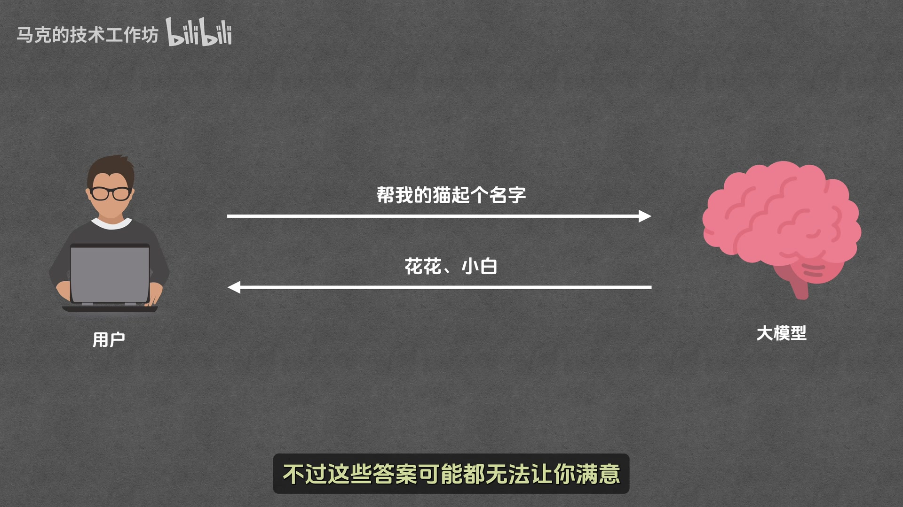
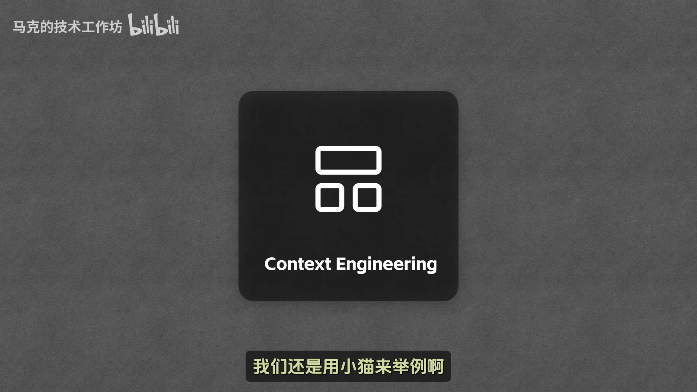
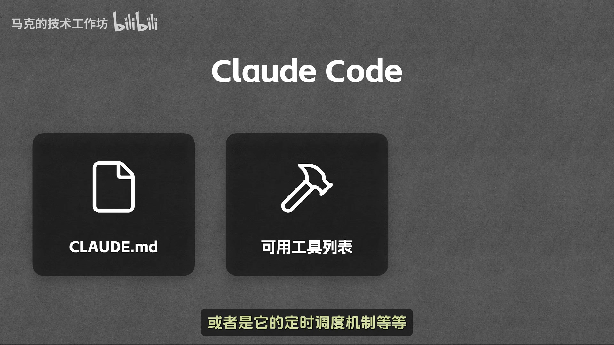
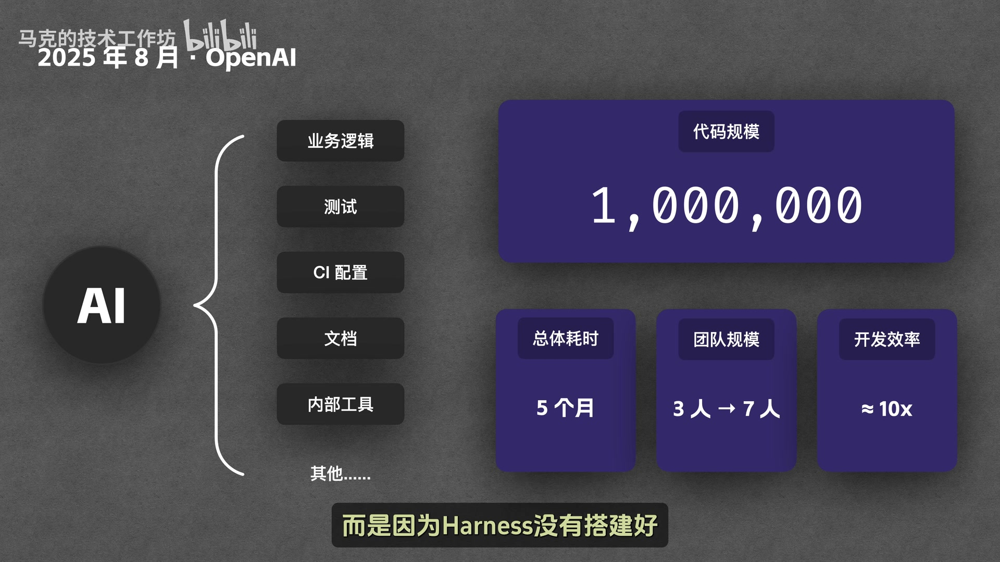
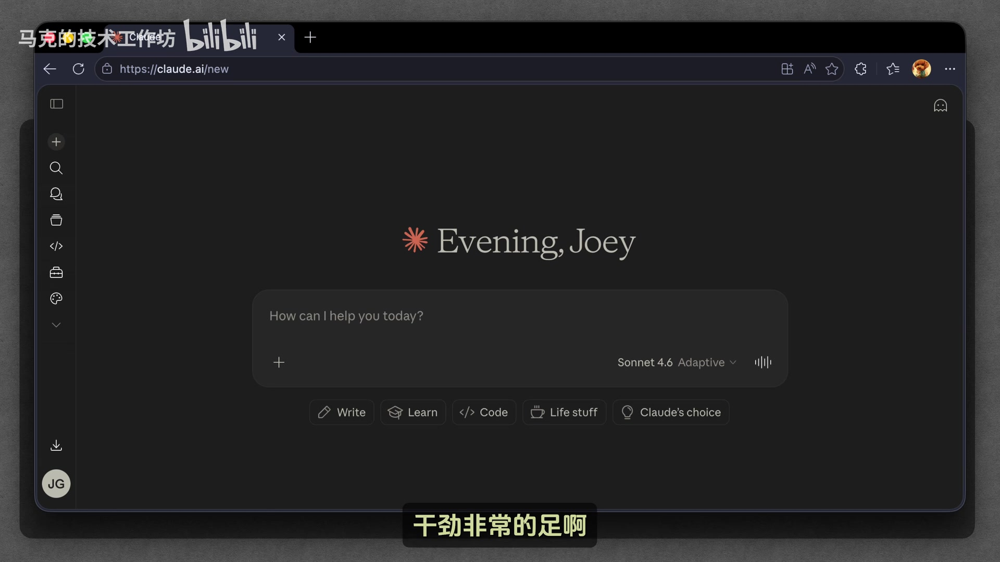
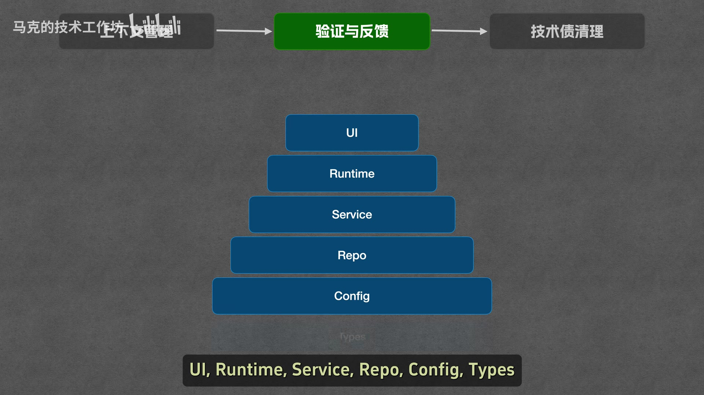
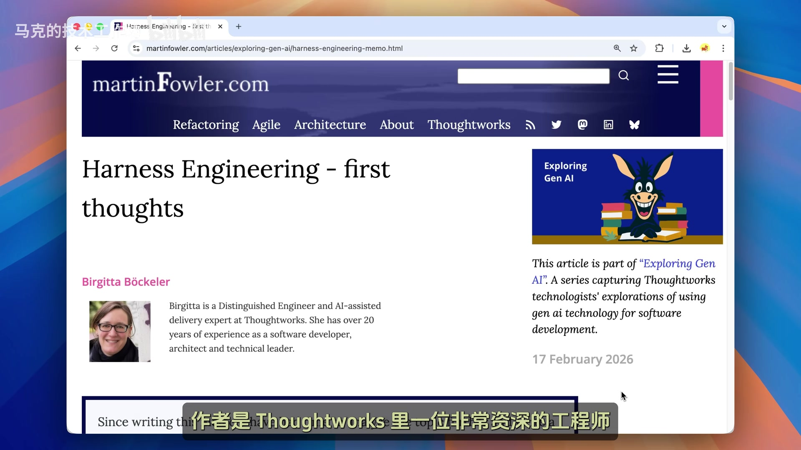

概念、实战与争议，一次全部讲清楚
从 Prompt Engineering 到 Harness Engineering 的演进
Harness Engineering 是 2025 年初 AI 圈兴起的新概念，核心思想是：围绕大模型搭建一套系统，让模型能够稳定、可靠地为人类做事。
它不是全新的技术，而是对已有技术（任务拆解、质量评估、代码检查等）的系统性重组。公式表达为：
Agent = Model + Harness从演进角度看，这是三个层层递进的概念：
OpenAI 用这套方法在 5 个月内写了近 100 万行代码；Anthropic 提出了 planner、generator、evaluator 三 agent 架构。但也有争议认为这是"新瓶装旧酒"，随着模型能力增强，Harness 可能会逐渐被模型自身吸收。
原视频文件较大（约 150 MB），请前往 B 站观看：
从概念到实战，再到争议讨论
三个层层递进的概念
Prompt 就是用户发给大模型的话。Prompt Engineering 研究的是如何更精准地表达自己的需求。
举例：给猫起名字

Context 是大模型接收到的所有信息，包括 Prompt、对话历史、工具列表、Skill 列表等。Context Engineering 研究的是如何在最合适的时机，把最合适的内容放到模型的 Context 里。
举例：多轮对话
Context 有容量上限，不能无限塞东西。常见的技术包括：

Context Engineering 的效果有上限。为了进一步榨干大模型的潜力，AI 圈又整出了新花样——Harness Engineering。
Harness 的本意是马具（缰绳、嚼子、头套等）。马很强大，但必须用马具来控制，才能让马为人类所用。

类比到大模型：
Agent = Model + HarnessHarness Engineering 就是专门研究如何构建与设计 Harness 的技术。它不再仅仅盯着模型提示词那点事，而是站在更高的系统层面上，研究怎么给大模型设计一套可以稳定运行的系统。
以 Claude Code 为例，看看 Harness 包含什么
在 Claude Code 中，所有不属于 Claude 模型的部分都是 Harness。比如：

Harness 涉及的范围很广，只要不是模型，我们都可以将它视为 Harness 的一部分。
用 Codex 在 5 个月内写 100 万行代码
OpenAI 发表了一篇文章，讲述他们如何用 Harness Engineering 在 5 个月内写了近 100 万行代码。核心经验包括：
OpenAI 把系统分成了好几层，规定了严格的依赖关系：
使用 Linter 和测试来避免违规。如果代码不合规则，Linter 或测试会报错，报错信息会发回给 Codex，Codex 根据报错信息修改，改完再跑 Linter 或测试，形成完整的自动闭环。
Agent 在大规模生成代码的过程中，会不可避免地引入一些糟糕的设计模式（重复代码、命名不规范等）。OpenAI 的解法是：

OpenAI 提出了一个关键断言：Human Steer, Agents Execute（人类负责掌舵，Agent 负责干活）。
到了 Harness Engineering 这一步，人和 AI 的分工彻底变了：
OpenAI 还提出了第二个重要观点：软件工程是在 AI 时代的新职责。虽然人类不再需要亲自写代码，但软件工程的工作并没有消失，而是变成了完全不同的形态——核心职责变成了为 Agent 搭建稳定、可靠的系统与支撑框架。
planner、generator、evaluator 三 agent 架构
Anthropic 发表了两篇与 Harness Engineering 相关的文章，核心内容可以总结为两点：任务规划和质量评估。
Anthropic 做了一个实验：直接让 Agent 执行一个任务（克隆 Claude.ai），结果效果非常不好。原因是需求工作量太大，Agent 急于求成，引发一系列问题：
解法：引入 planner agent，负责把用户一句模糊的需求，扩展成一份完整清晰的功能列表。后面的 Agent 在写代码时，就不用对着用户的需求猜了，照着功能点一个个做就行。
光让 Agent 生成代码是不够的，还需要对生成的代码做质量评估。Anthropic 尝试了两种方案，都不好使：
最终方案：做一个专门的评估 agent（evaluator）来评估产出质量。由于这个评估 agent 是一个独立的第三方，自然就没有理由去替别的 agent 的产出护短，评估结果也就客观多了。
最终形成了三个 agent 的协作流程：
Anthropic 把这个包含了三个 agent 的方案叫做 for harness fun，相比之下，那种只靠一个 generator 独立完成所有需求的传统单 agent 模式，被 Anthropic 称为 solo fun。

| 方案 | 效果 | 耗时 | 花费 |
|---|---|---|---|
| solo fun | 布局不合理，产品逻辑难以理解，bug 到处都是，基本不能用 | 20 分钟 | 9 美元 |
| for harness fun | 布局和整体产品逻辑都达到了可用水准，虽然还有一些问题，但比 solo fun 好很多 | 6 小时 | 200 美元 |
for harness 的方案无论是耗时还是花费都要远高于 solo fun，但效果确实好了不少。毕竟精雕细琢是有代价的。
后来 Anthropic 用更强的模型（opus.6）做 generator 后，发现模型的全局统筹能力够强，可以一次把所有功能点都拿过来，自己决定先做哪个再做哪个，稳步向前推进，不再需要别人对它的执行流程指指点点。
在这种情况下，强制分布执行的机制就不再需要了，流程也简化了。
Harness Engineering 是不是噱头？
Harness Engineering 里面所用到的所有技术，竟然没有一个是新的。Linter、代码检查、任务拆解规划、质量评估机制，这些东西其实早就有了。Harness Engineering 真正做的，只不过是把这些技术重新组织一下，统一放到了一个新词的下面。
它提供的是一套新的系统思维架构，而不是发明了一批颠覆性的新技术。
随着大模型自身能力的持续优化，今天看起来必不可少的这些 Harness 设计，未来很有可能会被模型能力本身逐步吸收，最终变得不再需要。
Anthropic 自己的文章里都有迹可循：
模型越强，所需要的 Harness 就越少。模型能力的提升，正在一点点蚕食 Harness Engineering 的生存空间。
Harness Engineering 是过渡期的关键技术

Harness Engineering 不是噱头，但应该也不是终局。
说它不是噱头，是因为它已经实实在在地带来了效果。无论是 OpenAI 还是 Anthropic，都通过 Harness Engineering 把 Agent 的稳定性、自动化程度和生产力往前推进了一大步。这些都是可以被验证的工程成果，而不是概念炒作。
工程领域真正的进步，往往不在于发明了什么新技术，而在于有没有一套统一的框架，把这些零散的能力组织起来，变成可以系统设计、可以持续优化的工程方法。Harness Engineering 的意义恰恰在这里。
但它大概率也不是终局。随着模型的能力继续增强，今天这些用来约束模型、纠正模型、给模型兜底的系统设计方案，很有可能会被模型自身逐步吸收。到那个时候，很多 Harness 可能会变得不再需要，这个词也许也会慢慢地淡出大家的视野。
更愿意把 Harness Engineering 看成是一个过渡期的关键技术。它可能不是未来的终局答案，但它是当下最现实的答案。
因为在今天，模型依然会犯错，依然会有幻觉，依然会在复杂的任务中偏离轨道。在这种现实下，Harness Engineering 的重要性就不容忽视。
可以说，谁能够把 Harness 搭得更稳，谁就能够更早地把 AI 的能力转换为真正的生产力，从而从中受益。
把整期视频压缩成一张表
| 问题 | 结论 |
|---|---|
| Harness 是什么？ | 马具的类比，用来控制大模型的系统。公式：Agent = Model + Harness |
| Harness Engineering 研究什么？ | 如何构建与设计 Harness，让模型能够稳定、可靠地为人类做事 |
| 与 Prompt/Context Engineering 的关系？ | 层层递进：Prompt（怎么说问题）→ Context（怎么给信息）→ Harness（怎么搭系统） |
| OpenAI 的实战经验？ | 5 个月写 100 万行代码，核心理念：Human Steer, Agents Execute |
| Anthropic 的三 agent 架构？ | planner（任务规划）、generator（代码生成）、evaluator（质量评估） |
| for harness fun vs solo fun？ | for harness 效果好但耗时耗钱（6小时/200美元 vs 20分钟/9美元） |
| Harness Engineering 是噱头吗？ | 不是噱头（有实际效果），但也不是终局（会被模型能力吸收） |
| 随着模型增强会怎样？ | 模型越强，所需要的 Harness 就越少，Harness Engineering 的生存空间会被蚕食 |
| Harness Engineering 的定位？ | 过渡期的关键技术，不是终局但是当下最现实的答案 |
视频中的关键概念
| 术语 | 英文 | 解释 |
|---|---|---|
| Harness | Harness | 马具的类比，用来控制大模型的系统 |
| Harness Engineering | Harness Engineering | 研究如何构建与设计 Harness 的技术 |
| Prompt Engineering | Prompt Engineering | 研究如何把问题说清楚的技术 |
| Context Engineering | Context Engineering | 研究如何给模型提供合适信息的技术 |
| planner | planner | 负责任务规划的 agent |
| generator | generator | 负责代码生成的 agent |
| evaluator | evaluator | 负责质量评估的 agent |
| for harness fun | for harness fun | Anthropic 的三 agent 协作方案 |
| solo fun | solo fun | 传统单 agent 模式 |
| Linter | Linter | 代码检查工具 |